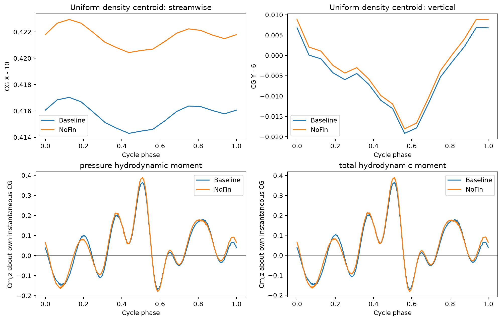

结论：在均匀密度假设下，Baseline 的质心处平均总俯仰水动力矩绝对值降低 13.0%，波动标准差降低 3.1%，峰峰值降低 6.0%。因此，“平均配平补偿需求较小、周期性俯仰水动力载荷较弱”得到条件性支持；改善幅度有限，尚非自由游动稳定性证明。
Baseline＝Sweep35；NoFin 为去胸鳍对照。将完整闭合表面内视为均匀密度实体，分别对两工况 17 帧实际运动几何积分。质心等于体积形心，密度数值不影响质心。不是将两工况继续放在同一个 Baseline 参考点比较。
周期平均质心：Baseline [10.415717488120531, 5.9945894550010514, 5.995661595229437]；NoFin [10.42165974153884, 5.996170379211815, 5.995573999449206]。质心纵向位置分别在各自参考鼻端后 0.41310L、0.41896L。
每一时刻使用 MCG＝Morigin−rCG×F 转换。以下主表使用求解器压力＋黏性总水动力矩，t/T＝9–10 的 481 个输出点；质心在 17 个实际几何帧之间作线性插值。
| 总俯仰力矩系数 | NoFin | Baseline | Baseline 相对变化 |
|---|---|---|---|
| 平均值 | 0.044588 | 0.038771 | -13.04% |
| 标准差 | 0.125319 | 0.121463 | -3.08% |
| 均方根（含均值） | 0.133014 | 0.127501 | -4.14% |
| 峰峰值 | 0.572103 | 0.538037 | -5.95% |
把工况差都先算到同一个随动的 Baseline 质心，平均总力矩差为 -0.006366；再改为各自质心，参考点差异带来 +0.000550 的修正，净变化为 -0.005816。因此可以区分水动力变化与质心位置改变的作用。
压力分部方差之和由 0.013069 增至 0.013781，两倍协方差之和由 0.002564 降至 0.000753。整体波动减小主要来自部位之间的载荷配合变化，而不是每个部位单独波动都变小。此分解使用 17 个实际几何相位，仅作为分部压力载荷的解释。

同一输出相位的精确质心结果、各自周期平均固定质心结果与完整统计见数据文件，用于判断插值或质心移动是否改变结论。分部力矩仍为压力分量，不能与总水动力矩混为一谈。
以 2×10−6L 容差合并导出接缝处的重复节点后，各帧封闭性及相邻三角面定向检查通过；最大质心修正分别为 5.56e-09L 和 6.27e-09L。体积的周期峰峰变化／均值分别为 0.5399% 和 0.5099%。这些几何体积变化保留在形心积分中，不用于推导质量随时间改变的动力学。
该假设把几何参考点升级为指定质量模型的质心，可以比较质心处平均水动力矩及载荷波动是否下降。若以零平均水动力矩作为目标，可讨论平均配平所需补偿力矩大小；但单个规定运动工况仍不给出姿态扰动后的恢复力矩、阻尼或自由运动稳定性。此处也没有把力矩直接换算为变形游动体的角加速度。
全部统计及分部协方差 [original local attachment: summary.json] · 逐帧质心与惯量积分 [original local attachment: centroid_geometry.csv] · 水动力矩统计 [original local attachment: moment_statistics.csv] · 前述两条物理假设分析 [original local attachment: ../mechanism/report.html]